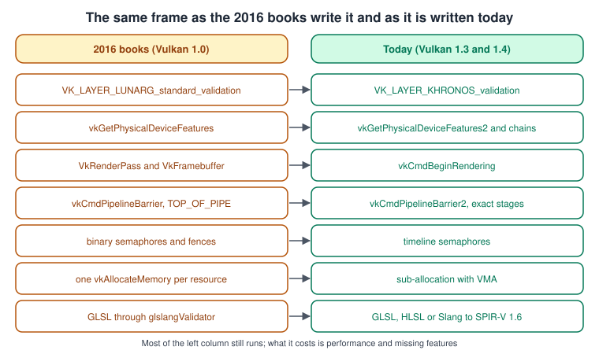
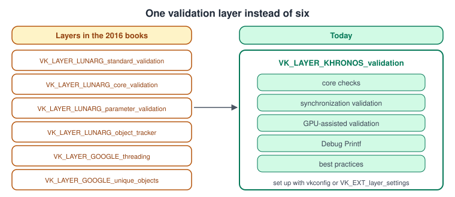
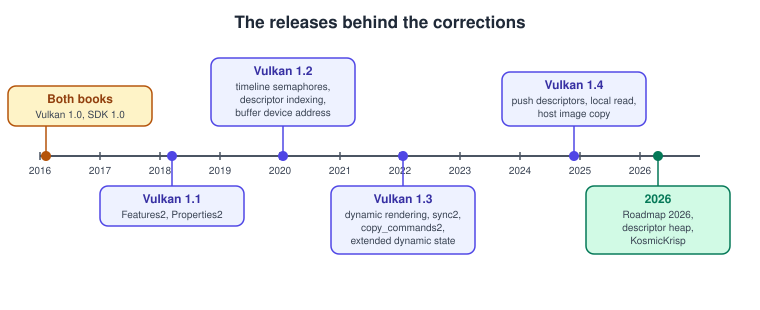
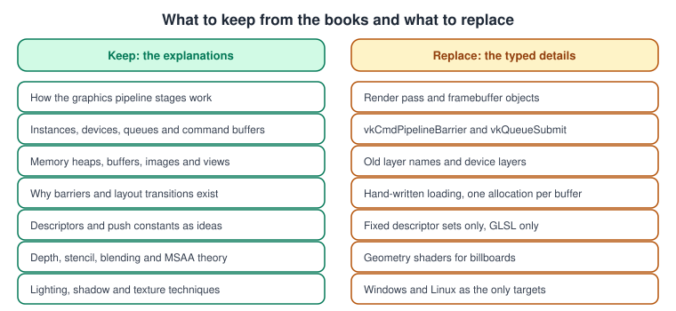

What Has Changed Since the Older Vulkan Guides
|
This content was generated with the assistance of AI and should be verified against the official documentation before being relied on in production. |
The ideas in the two older Vulkan books are still sound: an instance and a device that expose queues, command buffers that record work for a queue, pipelines built from SPIR-V shaders, resources bound through descriptors, explicit synchronisation and a swapchain that presents the result. What has changed is almost everything that is typed: the validation layers, the way a pass is begun, the barrier and submission structures, the semaphores, how memory and descriptors are managed, the shader toolchain and the platforms where Vulkan runs. Both books were written for Vulkan 1.0 (2016), with the Vulkan SDK 1.0 and the shader compiler of that time; this sub-section documents Vulkan 1.4 (December 2024), the LunarG SDK 1.4.363.0 and the 2026 roadmap. This page lists, book by book, the statements that are out of date and what to do today, so that you can keep reading the books for their explanations and use the pages of this sub-section for current code. The facts were checked on 1 November 2026 against the Vulkan specification and Guide, the Khronos tutorial, the LunarG SDK documentation and the release notes of the tools. For the changes that affect all graphics libraries, not only Vulkan, see What Has Changed Since the Older Guides.
The books have the short names used in the tables: VPG (Graham Sellers with John Kessenich, Vulkan Programming Guide, Addison-Wesley, 2016) and VCB (Pawel Lapinski, Vulkan Cookbook, Packt, 2017). Both are listed in the section bibliography. Chapter numbers are those of the books.

The left column is the style of both books; the right column is the structure of Bookshelf 1: From a Triangle to the Textured Book. Most of the left column still runs on a current driver, which is why the older code does not fail on the first line: the cost of staying on it is more code, more objects to manage, missed hardware features and, for the layers and a few calls, errors at start-up.
The corrections, book by book
Both books
| Chapters | What the books say | What is current | Release or date | Read more |
|---|---|---|---|---|
VPG 1, VCB 1 |
Enable the |
One layer, |
SDK 1.1.106 and later |
Validation and Debug Utils, Instances, the Loader and Layers |
VPG 1, VCB 1 |
Features and properties are read with |
Use |
Vulkan 1.1 (2018) |
Physical and Logical Devices, Vulkan Versions, Profiles and Extensions |
Neither book |
Messages from the validation layers arrive on stdout, or through the old |
Create a |
|
|
VPG 7 and 13, VCB 6 |
Drawing needs a |
Dynamic rendering ( |
Vulkan 1.3 (January 2022), local read in 1.4 (December 2024) |
|
VPG 4 and 11, VCB 3 and 4 |
Dependencies use |
synchronization2: |
Vulkan 1.3 (January 2022) |
Synchronization and synchronization2, Queues and Command Buffers |
VPG 11, VCB 3 |
Fences and binary semaphores are the only synchronisation primitives between the CPU and the GPU and between queues. |
Timeline semaphores carry a 64-bit counter that the host and every queue can wait on or signal. The swapchain has stricter rules for reusing the semaphores of acquire and present. |
Vulkan 1.2 (January 2020) |
Timeline Semaphores and Frames in Flight, Window System Integration and the Swapchain |
VPG 2, VCB 4 |
Each buffer and image gets its own |
Allocations are limited in number, so sub-allocate with the Vulkan Memory Allocator (VMA 3.5.0), use buffer device address to pass pointers to shaders, and use resizable BAR where the device offers it. |
VMA 3.5.0 (October 2026), buffer device address core in 1.2 |
|
VPG 6, VCB 7 |
Shaders are GLSL compiled to SPIR-V with |
Compile GLSL with |
Slang at Khronos (November 2024), Vulkan 1.3 and 1.4 |
|
VPG 6, VCB 5 |
Resources are reached through fixed descriptor sets that are written before a draw. |
Descriptor indexing and update-after-bind give bindless tables (1.2), push descriptors are core in 1.4, |
Vulkan 1.2, 1.4 and January 2026 |
Descriptors and Push Constants in Vulkan, Bindless in Vulkan |
VPG 9, VCB 7 and 12 |
Geometry shaders make billboards, sprites and particles. |
Geometry shaders are slow on tile-based GPUs. Use compute shaders, instancing or mesh shaders ( |
Mesh shaders as an extension |
Tessellation and Geometry Shaders in Vulkan, Mesh and Task Shaders |
VPG and VCB overall |
Vulkan runs on Windows and Linux, and no Apple platform has it. |
MoltenVK 1.4.2 is a Vulkan 1.4 portability layer on Metal, KosmicKrisp is a Mesa-based driver on Metal 4 that is Vulkan 1.4 conformant and needs macOS 26 or later, and the LunarG SDK ships for macOS. Enumerating portability devices needs |
2026 |
|
Neither book |
The books do not cover hardware ray tracing, mesh shaders, Vulkan Video, profiles, Vulkan SC, Vulkan-Hpp and RAII, subgroups in depth, the memory model, push descriptors or the roadmap profiles. |
These topics are covered from the Vulkan specification and Guide, and each page says so where it applies. |
1.2 to 1.4 and 2026 |
Ray Tracing in Vulkan, Vulkan Video, Vulkan SC and Embedded Vulkan, Vulkan-Hpp, RAII and C++ Bindings |

VPG: Vulkan Programming Guide
| Chapters | What the book says | What is current | Release or date | Read more |
|---|---|---|---|---|
Whole book |
The book targets Vulkan 1.0, SDK 1.0.22, |
Vulkan 1.4, LunarG SDK 1.4.363.0 (September 2026), SPIR-V 1.6 and Vulkan-Headers 1.4.367. No Vulkan 1.5 had been announced when this page was checked. |
1 November 2026 |
Setting Up the Vulkan SDK and Toolchain, Vulkan Versions, Profiles and Extensions |
1 |
A device can enable its own layers, and |
Device layers are legacy. Layers are enabled on the instance, and |
Legacy appendix of the specification |
Instances, the Loader and Layers, Physical and Logical Devices |
5 |
Mir is among the Linux window systems, and no Metal surface is listed. |
The current Vulkan Guide does not list a Mir surface function, and Wayland is the modern Linux compositor path. |
Current Guide |
VCB: Vulkan Cookbook
| Chapters | What the book says | What is current | Release or date | Read more |
|---|---|---|---|---|
1 |
Vulkan functions are loaded by hand with |
Use volk, or the Vulkan-Hpp dispatcher, which load the functions for you and can call a device function directly without the loader’s trampoline. |
volk and Vulkan-Hpp |
Setting Up the Vulkan SDK and Toolchain, Vulkan-Hpp, RAII and C++ Bindings |
4 |
Data moves with |
The |
Vulkan 1.3 and 1.4 |
|
8 and 9 |
A pipeline fixes almost all of its state, and each combination needs its own pipeline. |
Extended dynamic state is core in 1.3, |
Vulkan 1.3 (January 2022) |
Dynamic State, Shader Objects and Pipeline Libraries in Vulkan |
Preface |
Vulkan needs Android 7 or later. |
Still true as the first release with Vulkan, but all 64-bit devices with Android 10 or later have Vulkan 1.1, Android 16 maps to Vulkan 1.4 and OpenGL ES is frozen. |
Android 10 and Android 16 |

A change at the left of the books' own dates was already out of date when the books were read; a change at the right edge only matters for new code. Both groups need the same cure: use the call on the right of the tables above.
What to keep from the books

-
The explanations of the pipeline stages, of the instance, device, queue and command-buffer model, of memory heaps, of why barriers and layout transitions exist and of descriptors remain correct. Only the names of the calls around them have changed.
-
The structure of the book projects (create an instance and a device, a swapchain, a pipeline, resources, then record, submit and present each frame) is the structure of Bookshelf 1: From a Triangle to the Textured Book.
-
Where a book and the Vulkan specification or Guide disagree, follow the specification and the Guide.
-
The legacy render-pass model is still worth understanding because many engines and examples use it. Read it in Dynamic Rendering in Vulkan, which explains it once next to its replacement.
See also
-
Vulkan for the sub-section overview and its coverage map.
-
Vulkan Versions, Profiles and Extensions for what each core version promoted.
-
Vulkan Cheat Sheet for the one-page legacy-to-modern strip.
References
-
Vulkan specification, versions and legacy appendices: https://docs.vulkan.org/spec/latest/appendices/versions.html and https://docs.vulkan.org/spec/latest/appendices/legacy.html
-
Vulkan Guide, deprecated features: https://docs.vulkan.org/guide/latest/deprecated.html
-
Khronos, Vulkan 1.4: https://www.khronos.org/news/press/khronos-streamlines-development-and-deployment-of-gpu-accelerated-applications-with-vulkan-1.4
-
Khronos, Roadmap 2026 and descriptor heap: https://www.khronos.org/blog/vulkan-introduces-roadmap-2026-and-new-descriptor-heap-extension
-
LunarG Vulkan SDK: https://vulkan.lunarg.com/doc/sdk
-
MoltenVK releases: https://github.com/KhronosGroup/MoltenVK/releases
-
The books listed in the section bibliography